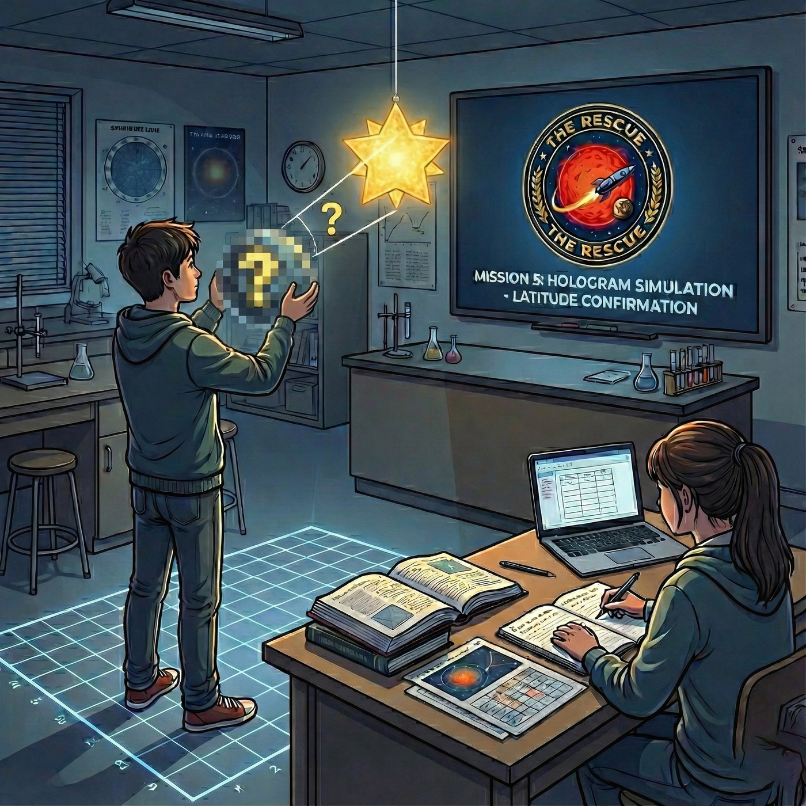
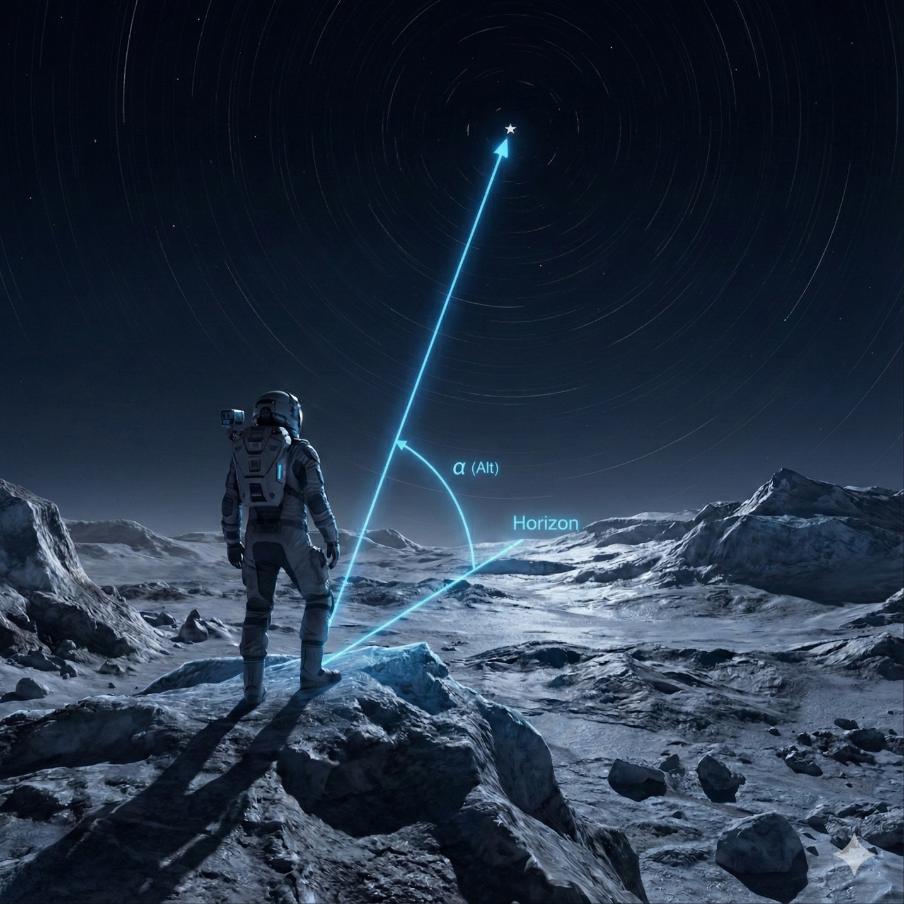
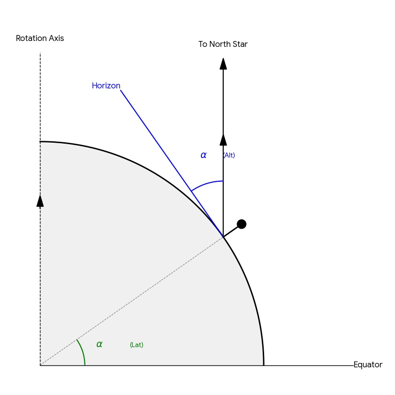
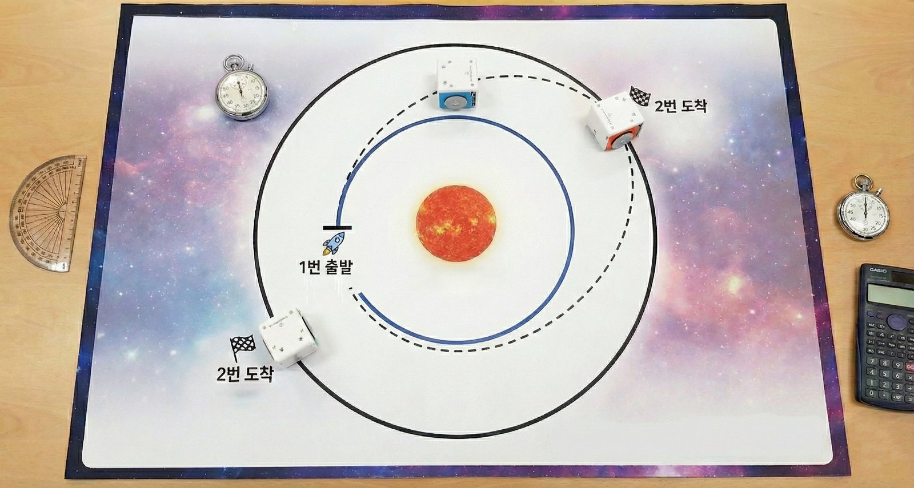

MISSION CONTROL SYSTEM v2.026
SECURITY ACCESS PROTOCOL
ENVIRONMENT ANALYSIS
"이곳은 지구가 아니다. 우리의 상식이 통하지 않는 곳이다."
아래 표를 보고 빈칸을 채우세요.
| 구분 | 지구 (Earth) | 프록시마 b |
|---|---|---|
| 공전 주기 | 365일 | 약 11.2일 |
| 자전 주기 | 1일 (24시간) | 약 11.2일 |
※ 계산할 때는 12일로 어림합니다. (12일 = 288시간)
⚠️ 답을 입력해주세요!
💡 행성의 ▲ 표시와 밝은 면이 항상 어디를 향하는지 관찰하세요!
⚠️ 관찰 내용을 적어주세요!
💡 달처럼 한쪽 면만 보여주는 현상의 이름은?
⚠️ 현상 이름을 입력해주세요!
LOCATION TRACKING
조난 대원으로부터 암호화된 이미지 파일이 전송되었습니다.
별이 흐르며 찍힌 사진입니다. 그런데 촬영 시간 정보가 손상되어 있습니다.
[수신된 별 궤적 사진 — 촬영 시간 불명]
장비가 별 하나를 추적했습니다. 눈금을 읽어 A에서 B까지 몇 도인지 적으세요.
⚠️ 눈금을 보고 별이 움직인 각도를 입력해주세요!
⚠️ 답을 선택해주세요!
① 미션 1에서 확인한 이 행성의 하루
12일 × 24시간 = 288시간
② 별이 움직인 30°는 한 바퀴(360°)의 몇 분의 1?
360 ÷ 30 = 12 → 1/12 바퀴
③ 그럼 찍은 시간은?
288 ÷ 12 = ?
⚠️ 계산한 시간을 입력해주세요!
💡 별이 보이려면 하늘이 어때야 할까요?
⚠️ 이 사진은 24시간 내내 어두운 곳에서 찍혔습니다.
황혼 지역은 해가 지평선에 걸려 있어서
밝습니다! 별 사진을 못 찍습니다!
대원은 현재 낮과 밤이 바뀌는 곳이 아니라...
해가 영원히 뜨지 않는 곳에 있습니다!
🥶 그곳의 표면 온도는 영하 200도에 가깝습니다.
구조를 서둘러야 합니다!
⚠️ 대원의 위치를 입력해주세요!
GPS 좌표가 손상되었지만,
분석팀이 사진 속 별의 위치 데이터를 추출하여
시뮬레이션 룸(교실)에 조난자가 보고 있는 하늘을 재현했습니다.



HOHMANN TRANSFER ORBIT
조난자의 위치는 파악되었습니다. 이제 구조선을 보낼 차례입니다!
연료를 가장 적게 사용하는 호만 전이 궤도를 이용합니다.
A0 궤도 매트에서 로봇 세 대로 실험합니다. 안쪽이 본부(내행성), 바깥쪽이 조난자(외행성), 가운데가 로켓 발사대입니다.

① 준비 로켓을 발사대에 놓고, 머리를 각도판 눈금에 맞춥니다. 정면이 90°입니다.
② 발사 내행성(본부)이 발사선을 지나는 순간 로켓을 출발시키고 스톱워치를 켭니다.
③ 기록 로켓이 조난자와 만나면(도킹) 스톱워치를 멈추고 시간을 적습니다.
④ 반복 발사각을 바꿔 가며 가장 빨리 도킹하는 각도를 찾습니다.
| 시도 | 발사각 (°) | 도킹까지 시간 (초) | 결과 |
|---|---|---|---|
| 1차 | |||
| 2차 | |||
| 3차 | |||
| 4차 | |||
| 5차 |
⚠️ 시도를 한 번 이상 기록하고, 가장 빨랐던 발사각과 이유를 써 주세요.
MISSION COMPLETE
실제 로봇 미션이 성공하면 아래 버튼을 눌러주세요.
프록시마 b 구조 작전 성공
📸 결과 화면을 스크린샷으로 저장하세요!
다음 단계로 넘어가려면 비밀번호를 입력하세요.
⛔ 잘못된 비밀번호입니다.
TEAM:
DATE:
TIME:
Status: CLEARED
Star Type:
Planet Rotation:
Survival Zone:
Reasoning:
Star Trail Angle:
Exposure Time:
Rotation Period:
Current Location:
Latitude:
Best Launch Angle: -
Attempts: -
Docking: -
MISSION STATUS: SUCCESS
PROXIMA COMMAND CENTER